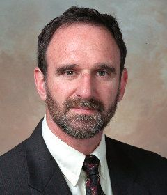

Martin Hellman | |
|---|---|
 Hellman c. 2000 | |
| Born | Martin Edward Hellman October 2, 1945 New York City, United States |
| Education | New York University (BS) Stanford University (MS, PhD) |
| Known for | Diffie–Hellman key exchange |
| Awards | IEEE Centennial Medal (1984) EFF Pioneer Award (1994) Louis E. Levy Medal(1997) Golden Jubilee Awards for Technological Innovation (1998) Marconi Prize (2000) National Academy of Engineering Member (2002) Hamming Medal (2010) Computer History Museum Fellow (2011)[1] Turing Award (2015) |
| Scientific career | |
| Fields | Cryptography Computer science Electrical engineering |
| Institutions | Stanford University MIT IBM Research |
| Thesis | Learning with Finite Memory (1969) |
| Thomas Cover | |
Doctoral students | Ralph Merkle Taher Elgamal |
| Website | ee |
Martin Edward Hellman (born October 2, 1945) is an American cryptologist and mathematician, best known for his invention of public-key cryptography in cooperation with Whitfield Diffie and Ralph Merkle.[2][3] Hellman is a longtime contributor to the computer privacy debate, and has applied risk analysis to a potential failure of nuclear deterrence.
Hellman was elected a member of the National Academy of Engineering in 2002 for contributions to the theory and practice of cryptography. In 2015, he and Whitfield Diffie won the ACM Turing Award.
In 2016, he wrote a book with his wife, Dorothie Hellman, that links creating love at home to bringing peace to the planet (A New Map for Relationships: Creating True Love at Home and Peace on the Planet).
Born in New York to a Jewish family,[4] Hellman graduated from the Bronx High School of Science. He went on to take his bachelor's degree in electrical engineering from New York University in 1966, and at Stanford University he received a master's degree and a Ph.D. in the discipline in 1967 and 1969.[5]
From 1968 to 1969 he worked at IBM's Thomas J. Watson Research Center in Yorktown Heights, New York, where he encountered Horst Feistel. From 1969 to 1971, he was an assistant professor of electrical engineering at the Massachusetts Institute of Technology. He joined Stanford University electrical engineering department in 1971 as an assistant professor and served on the full-time faculty for twenty-five years before taking emeritus status as a full professor in 1996.[6]
Hellman and Whitfield Diffie's paper New Directions in Cryptography was published in 1976. It introduced a radically new method of distributing cryptographic keys, which went far toward solving one of the fundamental problems of cryptography, key distribution.[7][8] It has become known as Diffie–Hellman key exchange, although Hellman has argued that it ought to be called Diffie-Hellman-Merkle key exchange because of Merkle's separate contribution. The article stimulated the development of a new class of encryption algorithms, known variously as public key encryption and asymmetric encryption. Hellman and Diffie were awarded the Marconi Fellowship and accompanying prize in 2000 for work on public-key cryptography and for helping make cryptography a legitimate area of academic research,[9] and they were awarded the 2015 Turing Award for the same work.[7]
Hellman has been a longtime contributor to the computer privacy debate. He and Diffie were the most prominent critics of the short key size of the Data Encryption Standard (DES) in 1975. An audio recording survives of their review of DES at Stanford in 1976 with Dennis Branstad of NBS and representatives of the National Security Agency.[10] Their concern was well-founded: subsequent history has shown not only that NSA actively intervened with IBM and NBS to shorten the key size, but also that the short key size enabled exactly the kind of massively parallel key crackers that Hellman and Diffie sketched out. In response to RSA Security's DES Challenges starting in 1997, custom hardware brute force crackers were built that could break DES, making it clear that DES was insecure and obsolete. As of 2012, a $10,000 commercially available machine could recover a DES key in days.[11][12]
Hellman also served (1994–96) on the National Research Council's Committee to Study National Cryptographic Policy, whose main recommendations have since been implemented.
Hellman has been active in researching international security since 1985.
Hellman was involved in the original Beyond War movement, serving as the principal editor for the "BEYOND WAR: A New Way of Thinking" booklet.[13]
In 1987 more than 30 scholars came together to produce Russian and English editions of the book Breakthrough: Emerging New Thinking, Soviet and Western Scholars Issue a Challenge to Build a World Beyond War. Anatoly Gromyko and Martin Hellman served as the chief editors. The authors of the book examine questions such as: How can we overcome the inexorable forces leading toward a clash between the United States and the Soviet Union? How do we build a common vision for the future? How can we restructure our thinking to synchronize with the imperative of our modern world?[14][15]
Hellman's current project in international security is to defuse the nuclear threat. In particular, he is studying the probabilities and risks associated with nuclear weapons and encouraging further international research in this area. His website NuclearRisk.org has been endorsed by a number of prominent individuals, including a former director of the National Security Agency, Stanford's President Emeritus, and two Nobel Laureates.
Hellman is a member of the Board of Directors for Daisy Alliance, a non-governmental organization based in Atlanta, Georgia, seeking global security through nuclear nonproliferation and disarmament.
In 1980, Martin Hellman was elevated to the grade of IEEE fellow for contribution to cryptography.[16] In 1997 he was awarded The Franklin Institute's Louis E. Levy Medal,[17] in 1981 the IEEE Donald G. Fink Prize Paper Award (together with Whitfield Diffie),[18] in 2000, he won the Marconi Prize for his invention of public-key cryptography to protect privacy on the Internet, also together with Whit Diffie.[19] In 1998, Hellman was a Golden Jubilee Award for Technological Innovation from the IEEE Information Theory Society,[20] and in 2010 the IEEE Richard W. Hamming Medal.[21]
In 2011, he was inducted into the National Inventors Hall of Fame.[22]
Also in 2011, Hellman was made a Fellow of the Computer History Museum for his work, with Whitfield Diffie and Ralph Merkle, on public key cryptography.[23]
Hellman won the Turing Award for 2015 together with Whitfield Diffie. The Turing award is widely considered the most prestigious award in the field of computer science. The citation for the award was: "For fundamental contributions to modern cryptography. Diffie and Hellman's groundbreaking 1976 paper, "New Directions in Cryptography," introduced the ideas of public-key cryptography and digital signatures, which are the foundation for most regularly-used security protocols on the internet today."[7]
{{cite journal}}: Cite uses deprecated parameter |citeseerx= (help)
{{cite web}}: Cite uses generic title (help)
{{cite web}}: CS1 maint: deprecated archival service (link)
{kind=link}